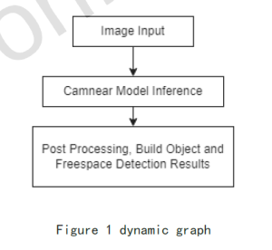
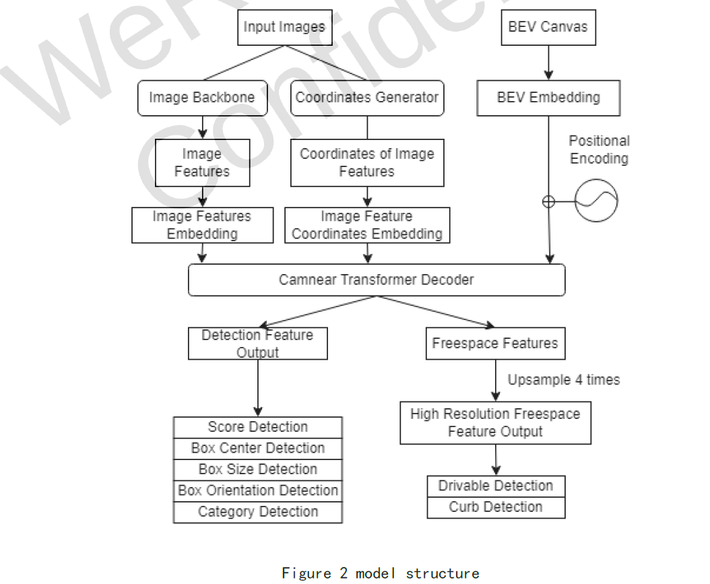
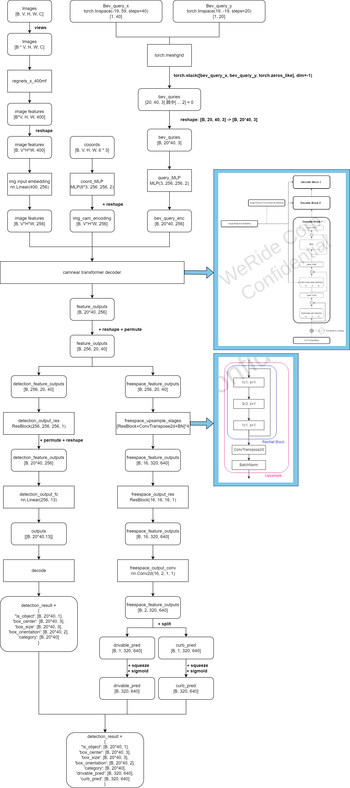
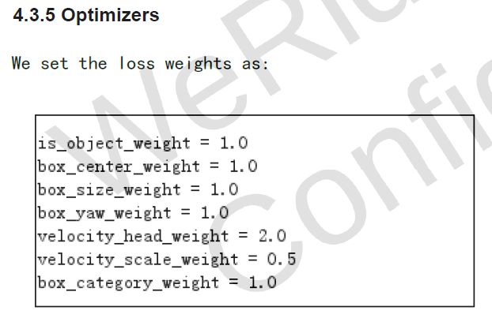
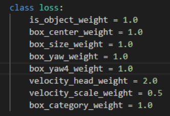
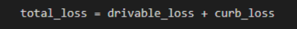

95_WR MS5 Camnear Detection
1. Module task
3D object detection
free-space detection
2. Model input
Input images
shape：[Batch, Num_views, 384, 512, 3]
Batch : 4 in training, 1 in testing;
Num_views: Less than 8
Batched images of all cameras (except fisheyes), including:
Front Wide
Front Tele
Front Left
Front Right
Back Left
Back Right
Back
Calibration parameters of all cameras
BEV Canvas
Three, data
GZU Stage A
Fourth, model design
1. Overview

2. Deep Learning Model Design


5. KPI comparison:
|
KPI |
WR |
exp1 |
exp2 |
exp3 |
exp4 |
|
|
detection |
Detection_Precision |
0.810 |
0.809 (-0.001) |
0.808 (-0.002) |
0.810 (+0.000) |
0.811 (+0.001) |
|
Detection_Precision_L |
0.620 |
0.616 (-0.004) |
0.615 (-0.005) |
0.617 (-0.003) |
0.620 (+0.000) |
|
|
Detection_Recall |
0.731 |
0.712 (-0.019) |
0.710 (-0.021) |
0.714 (-0.017) |
0.712 (-0.019) |
|
|
AP |
0.797 |
0.782 (-0.015) |
0.779 (-0.018) |
0.783 (-0.014) |
0.782 (-0.015) |
|
|
APL |
0.646 |
0.633 (-0.013) |
0.629 (-0.017) |
0.632 (-0.014) |
0.634 (-0.012) |
|
|
yaw4_Mean_Error |
0.135 |
0.141 (+0.006) |
0.143 (+0.008) |
0.140 (+0.005) |
0.143 (+0.008) |
|
|
yaw_Mean_Error |
0.067 |
0.085 (+0.018) |
0.090 (+0.023) |
0.081 (+0.014) |
0.089 (+0.022) |
|
|
free-space |
AbsError_0.24_Precision |
0.368 |
0.372 (+0.004) |
0.370 (+0.002) |
0.373 (+0.005) |
0.373 (+0.005) |
|
AbsError_0.24_Recall |
0.498 |
0.498 (+0.000) |
0.495 (-0.003) |
0.499 (+0.001) |
0.499 (+0.001) |
|
|
AbsError_0.6_Precision |
0.520 |
0.525 (+0.005) |
0.524 (+0.004) |
0.525 (+0.005) |
0.525 (+0.005) |
|
|
AbsError_0.6_Recall |
0.702 |
0.702 (+0.000) |
0.700 (-0.002) |
0.703 (+0.001) |
0.702 (+0.000) |
|
|
AbsError_0.8_Precision |
0.548 |
0.553 (+0.005) |
0.553 (-0.005) |
0.554 (+0.006) |
0.553 (+0.005) |
|
|
AbsError_0.8_Recall |
0.741 |
0.740 (-0.001) |
0.739 (-0.002) |
0.741 (+0.000) |
0.740 (-0.001) |
|
|
AbsError_1.0_Precision |
0.564 |
0.569 (+0.005) |
0.568 (+0.004) |
0.569 (+0.005) |
0.569 (+0.005) |
|
|
AbsError_1.0_Recall |
0.762 |
0.761 (-0.001) |
0.760 (-0.002) |
0.761 (-0.001) |
0.761 (-0.001) |
|
|
AbsError_1.2_Precision |
0.579 |
0.583 (+0.004) |
0.583 (+0.004) |
0.584 (+0.005) |
0.584 (+0.005) |
|
|
AbsError_1.2_Recall |
0.783 |
0.781 (-0.002) |
0.780 (-0.003) |
0.781 (-0.002) |
0.780 (-0.003) |
|
|
RelError_0.01_Precision |
0.206 |
0.208 (+0.002) |
0.207 (+0.001) |
0.210 (+0.004) |
0.208 (+0.002) |
|
|
RelError_0.01_Recall |
0.279 |
0.279 (+0.000) |
0.277 (-0.002) |
0.281 (+0.002) |
0.278 (-0.001) |
|
|
RelError_0.05_Precision |
0.434 |
0.439 (+0.005) |
0.437 (+0.003) |
0.441 (+0.007) |
0.439 (+0.005) |
|
|
RelError_0.05_Recall |
0.586 |
0.588 (+0.002) |
0.583 (-0.003) |
0.590 (+0.004) |
0.587 (+0.001) |
|
|
RelError_0.1_Precision |
0.551 |
0.560 (+0.009) |
0.559 (+0.008) |
0.561 (+0.010) |
0.561 (+0.010) |
|
|
RelError_0.1_Recall |
0.745 |
0.749 (+0.004) |
0.747 (+0.002) |
0.751 (+0.006) |
0.750 (+0.005) |
|
|
RelError_0.2_Precision |
0.598 |
0.600 (+0.002) |
0.601 (+0.003) |
0.601 (+0.003) |
0.601 (+0.003) |
|
|
RelError_0.2_Recall |
0.807 |
0.803 (-0.004) |
0.803 (-0.004) |
0.804 (-0.003) |
0.804 (-0.003) |
|
|
RelError_0.25_Precision |
0.607 |
0.609 (+0.002) |
0.609 (+0.002) |
0.609 (+0.002) |
0.609 (+0.002) |
|
|
RelError_0.25_Recall |
0.820 |
0.814 (-0.006) |
0.813 (-0.007) |
0.815 (-0.005) |
0.814 (-0.006) |
|
Six, problems
What is the reason for the splitting of CAMNEAR mission?Task design strategy?-The vehicle detection effect is better.PETR.
The CAMNEAR module has no corresponding marking document; -Afuse other label documents, but lacks the corresponding relationship;
Model turning TRT script is missing, No relevant introduction ;
Make Package script is missing;
Duplication indicator Compared with the index of the user manual, Detection Part: 1.7 points difference, 1.4 points for AP, 1.2 points for APL;
AOS代码比对：比较2个branch (ms5_per vs. wr_develop) 的代码：（1）W3_WR/aos/perception/runnables/camnear存在差异：ms5_per 多了sub_class_id，少了一个状态判断；（2）W3_WR/ai/P8N/CAMNEAR/DTECTOR HAS DIFFERENCES: MS5_PER HAS More Sub_Class;
WR0713 has updated the design document, increasing the explanation of LOSS and model output, and there are no changes in other parts;
Through comparison training code, in the 0713 design document, 4.3.3 lacks box_yaw4_loss; 4.3.5 only gives the weight of the detection related LOSS, and the weight of the freeSpace -related LOSS is not given;
Module
document
Code corresponding part
Detection part


FreeSpace part
No corresponding description

In the 0713 test report, FreeSpace's precision is only 0.714, and the recall is only 0.695, which does not meet the requirements of 0.95 greater than equal to 0.95;
WR reply:
WR Issue 0706 - Wave 3 RB & WR Cooperation - Confluence (atlassian.net)